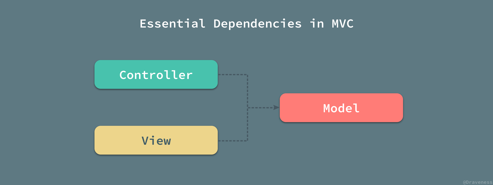
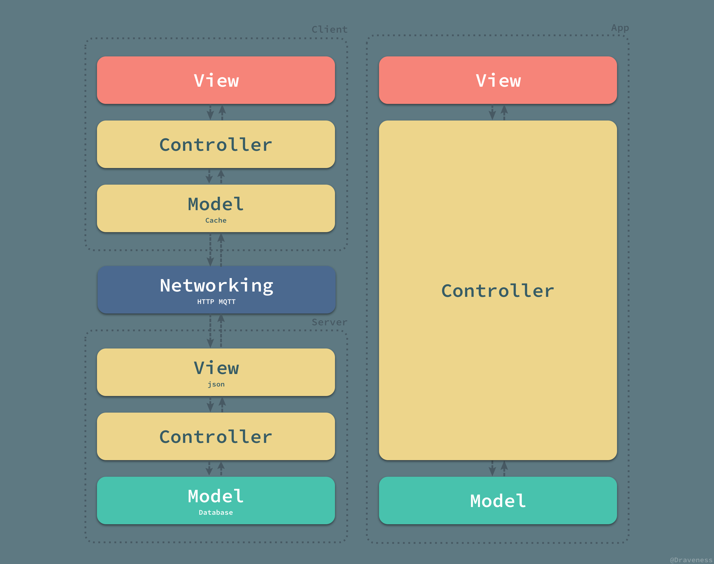

学线移动第一次例会
学线移动第一次培训
1.作业点评
略
2.细说MVC架构与项目分包
参考：
https://zh.wikipedia.org/wiki/MVC
参考文献http://www.dgp.toronto.edu/~dwigdor/teaching/csc2524/2012_F/papers/mvc.pdf
基本概念
我们将应用程序划分为三种组件，模型 - 视图 - 控制器（MVC）设计定义它们之间的相互作用。

在上面那篇论文中是这样描述这三部分的：
In the MVC paradigm the user input, the modeling of the external world, and the visual feedback to the user are explicitly separated and handled by three types of object, each specialized for its task.
The view manages the graphical and/or textual output to the portion of the bitmapped display that is allocated to its application.
The controller interprets the mouse and keyboard inputs from the user, commanding the model and/or the view to change as appropriate.
Finally, the model manages the behavior and data of the application domain, responds to requests for information about its state (usually from the view), and responds to instructions to change state (usually from the controller).
- 模型 (Model) 用于封装与应用程序的业务逻辑相关的数据以及对数据的逻辑。“ Model ”有对数据直接访问的权力，例如对数据库的访问。“Model”不依赖“View”和“Controller”，也就是说， Model 不关心它会被如何显示或是如何被操作。但是 Model 中数据的变化一般会通过一种刷新机制被公布。为了实现这种机制，那些用于监视此 Model 的 View 必须事先在此 Model 上注册，从而，View 可以了解在数据 Model 上发生的改变。（比如：观察者模式）(比如实体类)
- **视图 (View)**能够实现数据有目的的显示（理论上，这不是必需的）。在 View 中一般没有程序上的逻辑。为了实现 View 上的刷新功能，View 需要访问它监视的数据模型（Model），因此应该事先在被它监视的数据那里注册。（
findViewbyId方法） - **控制器 (Controller)**起到不同层面间的组织作用，用于控制应用程序的流程。它处理事件并作出响应。“事件”包括用户的行为和数据 Model 上的改变。
依赖关系
虽然我们对 MVC 中的各个模块的交互不是特别了解，但是三者之间的依赖关系却是非常明确的；在 MVC 中，模型层可以单独工作，而视图层和控制器层都依赖与模型层中的数据。

虽然如上图所示，视图和控制器之间没有相互依赖，不过因为视图和控制器之间的依赖并不常用，所以图中将视图和控制器之间的依赖省略了。
优点
首先，多个 View 能共享一个 Model 。如今，同一个Web应用程序会提供多种用户界面，例如用户希望既能够通过浏览器来收发电子邮件，还希望通过手机来访问电子邮箱，这就要求Web网站同时能提供Internet界面和WAP界面。在MVC设计模式中， Model 响应用户请求并返回响应数据，View 负责格式化数据并把它们呈现给用户，业务逻辑和表示层分离，同一个 Model 可以被不同的 View 重用，所以大大提高了代码的可重用性。
其次，Controller 是自包含（self-contained,指高独立内聚）的对象，与 Model 和 View 保持相对独立，所以可以方便的改变应用程序的数据层和业务规则。例如，把数据库从MySQL移植到Oracle，或者把RDBMS数据源改变成LDAP数据源，只需改变 Controller 即可。一旦正确地实现了控制器，不管数据来自数据库还是LDAP服务器，View 都会正确地显示它们。由于MVC模式的三个模块相互独立，改变其中一个不会影响其他两个，所以依据这种设计思想能构造良好的少互扰性的构件。
此外，Controller 提高了应用程序的灵活性和可配置性。Controller 可以用来连接不同的 Model 和 View 去完成用户的需求，也可以构造应用程序提供强有力的手段。给定一些可重用的 Model 、 View 和Controller 可以根据用户的需求选择适当的 Model 进行处理，然后选择适当的的 View 将处理结果显示给用户。
评价、误解及适用范围
MVC模式在概念上强调 Model, View, Controller 的分离，各个模块也遵循着由 Controller 来处理消息，Model 掌管数据源，View 负责资料显示的职责分离原则，因此在实现上，MVC 模式的 Framework 通常会将 MVC 三个部分分离实现：
- Model 负责资料访问，较现代的 Framework 都会建议使用独立的资料对象 (DTO, POCO, POJO 等) 来替代弱类型的集合对象。资料访问的代码会使用 Data Access 的代码或是 ORM-based Framework，也可以进一步使用 Repository Pattern 与 Unit of Works Pattern 来切割数据源的相依性。
- Controller 负责处理消息，较高端的 Framework 会有一个默认的实现来作为 Controller 的基础，例如 Spring 的 DispatcherServlet 或是 ASP.NET MVC 的 Controller 等，在职责分离原则的基础上，每个 Controller 负责的部分不同，因此会将各个 Controller 切割成不同的文件以利维护。
- View 负责显示资料，这个部分多为前端应用，而 Controller 会有一个机制将处理的结果 (可能是 Model, 集合或是状态等) 交给 View，然后由 View 来决定怎么显示。例如 Spring Framework 使用 JSP 或相应技术，ASP.NET MVC 则使用 Razor 处理资料的显示。
也因为 MVC 模式强调职责分离，所以在发展 MVC 应用时会产生很多文件，在 IDE (集成开发环境) 不够成熟时它会是个问题，但在现代主流 IDE 都能使用类别对象的信息来组织代码编辑的情况下，多文件早已不是问题，而且 MVC 模式会要求开发者进一步思考应用程序的架构 (Application Architecture)，而非用大杂烩的方式开发应用程序，对于应用程序的生命周期以及后续的可扩展与可维护性而言有相当正面的帮助。另外，MVC 职责分离也带来了一个现代软件工程要求的重要特性：可测试性 (Testability)，MVC-based 的应用程序在良好的职责分离的设计下，各个部分可独立行使单元测试，有利于与企业内的自动化测试、持续集成 (Continuous Integration) 与持续交付 (Continuous Delivery) 流程集成，减少应用程序改版部署所需的时间。
MVC 模式的应用程序的目的就是希望打破以往应用程序使用的大杂烩程序撰写方式，并间接诱使开发人员以更高的架构导向思维来思考应用程序的设计，因此对于一个刚入门的初学者来说，架构导向的思考会有一定的门槛，需要较多的实现与练习才能具备相应的能力，大多数的初学者还是较习惯于大杂烩式的程序撰写，所以可能会对 MVC 模式抱持着排斥或厌恶的心态，然而 MVC（或是其他的设计模式）都是有助于应用程序长远的发展，虽然大杂烩式的程序也可以用来发展长生命周期的应用程序，但是相较于 MVC，大杂烩式的程序在可扩展性和可维护性 (尤其是可测试性) 上会远比 MVC 复杂很多，相反的，MVC 模式的应用程序是在初始开发时期必须先思考并使用软件架构，使得开发时期会需要花较多心力，但是一旦应用程序完成后，可扩展性、可维护性和可测试性反而会因为 MVC 的特性而变得容易。
因此，MVC 模式在已有众多优秀 Framework 的现代，早就已经没有不适合小型应用的问题，小型的应用还是可以由 MVC Framework 的应用来获取 MVC 的优点，同时它也能作为未来小型应用扩展到大型应用时的基础与入门砖。若一开始就想要做大型应用，那么 MVC 模式的职责分离以及要求开发的架构思考会更适合大型应用的开发。
MVC的不足
（1）增加了系统结构和实现的复杂性。对于简单的界面，严格遵循MVC，使模型、视图与控制器分离，会增加结构的复杂性，并可能产生过多的更新操作，降低运行效率。
（2） 目前，一般高级的界面工具或构造器不支持MVC架构。改造这些工具以适应MVC需要和建立分离的部件的代价是很高的，从而造成使用MVC的困难。
(3) 降低了系统的性能。如果不采用分层式结构，很多业务可以直接造访数据库，以此获取相应的数据，如今却必须通过中间层来完成。
(4) 增加了代码量，增加了工作量。
实际情况
在实际情况下，单独的 iOS、Android 和 Web 应用往往不能单独工作，这些客户端应用需要与服务端一起工作；当前端/客户端与后端一同工作时，其实分别『部署』了两个不同的应用，这两个应用都遵循 MVC 架构模式：

客户端和服务器通过网络进行连接，并组成了一个更大的 MVC 架构；从这个角度来看，服务端的模型层才存储了真正的数据，而客户端的模型层只不过是一个存储在客户端设备中的本地缓存和临时数据的集合；同理，服务端的视图层也不是整个应用的视图层，用于为用户展示数据的视图层位于客户端，也就是整个架构的最顶部；中间的五个部分，也就是从低端的模型层到最上面的视图共同组成了整个应用的控制器，将模型中的数据以合理的方式传递给最上层的视图层用于展示。
3.代码规范
转载（有改动）：https://zhuanlan.zhihu.com/p/104253155 在此致敬原作者
开始正文前，咱们还需要明确编码规范的两个原则：
- 封装和多态：Java是面向对象的编程语言，语言特征是：封装、继承和多态。但笔者认为继承有时候会破坏封装性，请谨慎使用，面向对象封装和多态是核心；
- 可维护性优先于性能：编码规范围绕中心是代码的可维护性，在需要对代码可维护性和性能做出权衡时，优先考虑代码可维护性，笔者认为，好的代码结构可以保证好的性能，性能在设计时就应该纳入思考；
PS.个人认为第二点更重要
命名
业界有一句话也许大部分程序员都认同：“代码就是最好的注释”，而好的命名有利于增强代码的可读性。为了增强代码的可读性，笔者认为命名应遵从三个原则：
- 共识：共识是指不同人的横向比较，共识按范围分包含组内共识（业务相关的专有名词）、企业内部公司和业界共识；
- 统一：统一是指单个人的垂直比较，单个人在不同时间点编写的变量、方法、类的命名要统一，不能出现同一个概念一会儿这样命名，一会儿又那样命名；命名不同意也会加大代码阅读难度；
- 得体：得体是指用词合理，做到词能达意，命名能够很好地表达用意（类命名一般是名词短语，方法命名一般是动词短语）；
《开发手册》提出了一系列强制和推荐的编程规约，其目的也是达成共识，做到见名知意。如有以下命名规约：
代码中的命名均不能以下划线或美元符号开始，也不能以下划线或美元符号结束。
代码中的命名严禁使用拼音与英文混合的方式，更不允许直接使用中文的方式。
类名使用
UpperCamelCase风格，必须遵从驼峰形式，但以下情形例外：DO / BO /DTO / VO / AO方法名、参数名、成员变量、局部变量都统一使用
lowerCamelCase风格，必须遵从驼峰形式。常量命名全部大写，单词间用下划线隔开，力求语义表达完整清楚，不要嫌名字长（尽量短）。
中括号是数组类型的一部分，数组定义如下：
String[] args;POJO 类中布尔类型的变量，都不要加 is，否则部分框架解析会引起序列化错误。（没遇见过）
包名统一使用小写，点分隔符之间有且仅有一个自然语义的英语单词。包名统一使用单数形式，但是类名如果有复数含义，类名可以使用复数形式。
杜绝完全不规范的缩写，避免望文不知义。
注：《开发手册》目的是在企业内部达成共识，所以才会加上阿里巴巴关键词限定，业界可用来作为参考，但各个企业还是需要根据实际情况制定自己的规范，比如上面的第3点，笔者认为为了统一，后面的特殊情况也不应该出现，还是应该Do/Bo/Dto/Vo这样命名，做到统一。此外一些推荐的规则，比如
如果模块、接口、类、方法使用了设计模式，在命名时体现出具体模式。
其实笔者认为应该作为强制规则发布，这样命名可以很好的告知设计模式，读者可以很快在脑海中绘制设计模式对应的代码结构并立刻知道代码功能（常见设计模式在程序员界已形成共识，如果对应设计模式还不了解，说明功底不够还需要修炼）。
统一讲的是个人在编码过程中做到命名前后一致，如果做不到统一，会给他人阅读就带来了难度。《开发手册》这类文献可以起到一定作用，但很大一部分还是个人的自我约束。举两个反例：
- 同义词命名不统一：比如“指标“”这个词，一会儿用
Index，一会儿用indicator； - 拼写和英文命名不统一：比如“代理商”这个词，一会儿用
Agent，一会儿用DaiLiShang；
变量命名
变量名应该简短且有意义，并能够顾名思义。简单并不意味着越短越好，比如一个字符的变量名是不允许的，很影响代码的可读性。
反例：
1 | int i; // 不允许 |
对于局部变量，为了保证代码简洁，局部变量命名只要能够在代码中区分，应避免名称过长，影响阅读。
拿Spring MVC中DispatcherServlet类中的代码片段来举例
1 | HandlerMapping hm = context.getBean(HANDLER_MAPPING_BEAN_NAME, HandlerMapping.class); |
对于类中的私有域（field）名称，则不应该缩写，域名称需要很好的反映到底是哪个类的实例以免影响阅读。
反例：
1 | @Autowired |
常量命名
常量使用大写字母 + 数字进行命名 。
正例：
1 | private static final int DEFAULT_CAPACITY = 10; |
反例：
1 | private static final int DefaultCapacity = 10; |
方法命名
方法名称应该是一个动词短语（为了共识），不论public方法还是private方法，方法名称需要很好地反映方法功能本身。
正例：
还是DispatcherServlet，私有方法较多，但通过名称可以很清楚地反映方法功能
1 | initStragies(ApplicationContext); // Stragies说明该方法作用是初始化一系列策略 |
这样的方法命名让读者就很舒服。
反例：方法职责不清晰造成方法名过长
1 | // 接口定义 |
只要命名合理，不要担心方法名称太长，但方法名称过长常常又意味着该方法干的事太多了，则需要思考是否可以拆分方法，上面这个例子不够典型，但也反映了一个设计原则，保证方法的职责单一，可以拆分成3个方法：
1 | public UserInfo getUserInfo(Context context); |
如果方法实现会产生副作用（side effect），该副作用需要体现在方法名称。
反例：副作用未体现在方法名中
1 | private void checkPermission(User user) throws NoPermissionException{ |
为了体现方法名称可改成 fillOrgIdsAndCheckPermission。
反例：超长的方法名
1 | public List<Integer> getByYearQuargerAndXXXXXXXXIdAndXXXXXConditionAndCityLevelList(YearQuarter yearQuarter, Integer XXXXXXXXId, XXXXXCondition condition, List<Integer> cityLevelList); |
方法名反映了入参却忽略了返回值。如果不存在方法重载，那么方法名无需通过入参进行区分但必须反映返回值，这样做的目的是：通过方法名称区分一个类的所有方法，因此，这个反例方法名可改成getXXXList（此外若入参超过4个，最好定义一个类对入参进行包装）。
类命名
类名应该是名词，尽量保证类名简单且具有描述性，避免缩略语，如果使用到设计模式需要在类名中体现，目的是形成共识，帮助读者理解代码。
正例：List的实现类命名
1 | ArrayList // 数组形式的List实现类 |
注：以上例子来自jdk、apache开源代码。
正例：使用了设计模式的类
1 | org.springframework.beans.factory.BeanFactory // 简单工厂模式 |
注：以上类来自Spring、jetty、tomcat。
注释
注释有利于帮助理解代码，如果使用不当，反而会影响代码的简洁性，不利于理解代码。注释在使用上笔者认为需要坚持三个原则：
- 保持代码干净，消除不必要的注释：好的代码本身就是最好的注释，只在必要时通过注释协助理解代码，目的是保持代码的简洁性，增强代码的可读性；
- 区分注释和
JavaDoc：类、域、方法使用JavaDoc，方法内部使用注释； - 注释及时更新：注释也是代码的一部分，如果代码发生变更，注释也要跟着改；
注释正例可通过《开发手册》作为参考，笔者更愿意通过一些反例告知读者哪些是错误的注释！
反例：加入过多的注释影响代码阅读
在系统开发中，笔者发现，代码有大片大片的注释，格式乱七八糟，笔者想强调一点：请把代码当成产品来看待，注意提交的代码一定要干净！可能有同学会反驳，注释掉的是代码，将来可能还需要还原，如果确实是这种情况，那么完全可以通过版本控制工具（git or svn）还原。
1 | public String recommendGift(double budget) { |
如果代码需要通过注释才能理解，这时可能就需要反思，是否是代码本身编写的问题，比如方法过长，试着重构（比如抽取方法、方法重命名等）。
修改后
1 | public String recommendGift(double budget) { |
反例：JavaDoc和注释不分
1 | // User:xxxxx |
如果是JavaDoc，可参考《开发手册》注释章节部分强制规约：
类、类属性、类方法的注释必须使用 Javadoc 规范，使用/*内容/格式，不得使用// xxx 方式；
所有的抽象方法（包括接口中的方法）必须要用 Javadoc 注释、除了返回值、参数；
所有的类都必须添加创建者和创建日期；
如果是注释，需要区分注释和解释：注释用于帮助理解业务流程，解释是说明这里为什么要这么做；注释用在方法内部单行注释，在被注释语句上方另起一行，解释紧跟代码之后，举个例子：
1 | private User getLeader(Query query) { |
解释用在比较特殊的业务上，替代方案是在领域内部单独提供一个方法，这样就不用解释了。
反例：代码发生变更，但注释没变
1 | /** |
方法第一版是返回小于10的正整数，后由于需求变更改成小于等于10的正整数，可是注释还是小于10，注释和方法实现不同步这让人感到很困惑。
代码自解释
注释是为了帮助理解代码，如果代码是自解释的（本身就具有很好的可读性），那么就无需添加注释了，这是最高境界，一般有三种做法：
- 合适的命名：包含变量、方法命名（前文已提）；
- 代码合理分段；
- 代码是同一层面的抽象：一个方法的内部代码除了合理分段外，每一段都是同一业务层面的抽象，有助于读者理解代码；(MVC)
正例：将代码按照单一执行任务合理分段有利于增强可读性。
1 | if(result.getStatus() != Status.OK) |
以上是代码示例，SpringMVC包的DispatcherServlet中doDispatch方法可以很好地说明一个复杂处理逻辑分段的重要性：
1 | protected void doDispatch(HttpServletRequest request, HttpServletResponse response) throws Exception { |
正例：代码是同一层面的抽象
以SpringMVC包的DispatcherServlet中initStrategies方法举例
1 | /** |
initStrategies方法是DispatcherServlet这个类初始化策略的主流程，内部调用的是同一抽象层面的方法，且各个方法做到见名知意，这种清晰的代码结构我想就无需再注释了吧。
无用注释
在日常代码中有一些滑稽的没有意义的注释。
反例：没有必要的注释
1 | /** |
请不要侮辱阅读者的智商，这种注释请问到底有什么用！
反例：没有礼貌的注释
还记得前两年某视频网站在js代码注释中注释了“屌丝VIP”字样在网上被喷的事件，尊重别人才能赢得别人的尊重，应避免没有礼貌的侮辱性的注释。
1 | // 屌丝VIP |
这样的注释对于代码的写注释的人来说并没有任何好处，同时你永远都不会知道将来这些注释会被谁来阅读，你的老板、一个客户或者是刚才被你数落的愚蠢得可怜的工程师。
反例：过期的代码注释
1 | public class Program |
“万一我们下次还要用到它呢“，每听到这样的解释我真心无语。无效代码注释本章节开头已说明，请删除无效的代码注释！需还原请通过版本控制工具还原！
反例：故事性（代码不相关）注释
1 | // 张三叫我这么做，如果有不懂的，你可以去问他。 |
如果是一个局外人或一个新人，这种注释没有任何用，除了他俩知道外（业务过了一段时间他俩也忘了为什么这么做），对其他人提供不了任何有价值的信息。如果你不得不在你的代码注释中提及需求，那也不应该提及人名。在上面的示例中，好像程序想要告诉其它程序员，这根本没有必要在注释中提到一些和代码不相干的事。可能有人会狡辩，我还是必须这样写注释，原因有二：
- 有时候，那些所谓的“高手”逼着我这么干，所以，我要把他的名字放在这里让所有人看看他有多SB。
- 有时候，我对需求并不了解，我们应该放一个联系人在在这里，以便你可以去询问之。
对于第一点，正确的做法沟通解决问题，说明清楚为什么不能这么去做；如果非得这么干，那么好请发邮件告知或在文档中备注。不要在代码中写这样的注释；对于第二点，应该将联系人写在需求文档中。
反例：没有意义的注释
1 | // Sorry,这段代码写得不好，请多见谅 |
很明显，程序员已经意识到代码的问题，这样的注释除了为自己的懒惰开脱外，不知道还有什么用！
1 | // 勿动这块代码！！！ 如果需要改动，请不要影响到张三和李四的代码 |
这种也是很无语的注释，当需要这样注释时，代码到底有多不可维护呀！
此外还有多年的TODO注释也是需要消灭的。
注释章节就写到这，希望对你有帮助。
常量
常量是用final修饰符修饰的不可变数值基础类型（或数值类型），本节可讨论话题不多，笔者想强调4点：
- 在工程中不要使用一个常量类维护所有常量。
- 常量类请加修饰符final以表示他是不可继承的。
- 合理地放置常量类，即区分是类内部常量，还是包内常量，还是是整个工程常量。
- 几个具有相关性的常量（比如type，state）请使用枚举。
下面针对第一点，第三点说明：
反例：在工程中使用一个常量类维护所有常量
笔者曾见过很多老工程使用一个SystemConsts包含系统内定义的所有常量，在不断迭代后，多数类似SystemConsts这种类定义的常量常常是100+（注释至少都是300行+），面对几百行的常量，维护会特别麻烦：即使是老手，有时你还是不清楚到底有没有定义过该常量，如果定义过，那么很可能你需要花点时间去找是哪个常量，如果关键字搜索不对，那么很可能这个时间成本还不低；如果不凑巧关键字没找到，那么你得重新定义一个，但很可能出现常量重复定义，当需求发生变更时，diamante改动特别容易出现遗漏，引发bug。
正确的做法是：
- 按功能分类，比如：缓存相关常量放在
CacheConsts下，系统配置类常量放在ConfigConsts下； - 按业务划分，如果是在指定范围取值的常量，需要替换成枚举；
反例：不合适地放置常量类
易懂变量也要统一定义成应用内共享常量，两位程序员在两个类中分别定义了表示 “是”的变量：
1 | // 类 A |
预期是 true，但实际返回为 false，导致线上问题。
合理地放置常量类，正确的做法是：
- 跨应用共享常量，放在准备提供给外部jar包所在module的
consts目录； - 工程内共享常量，放在工程common module下
consts目录； - 子模块内部共享，在相应子模块
consts目录； - 类内共享，放在类内部，注意加private进行限定；
常量章节就写到这。
异常处理
在介绍异常处理规范之前，实在有必要了解Java的异常体系，什么时候使用受检异常，什么时候使用非受检异常。
- Java异常体系：
在 Java 中，所有的异常都有一个共同的祖先 Throwable（可抛出）。**Throwable 指定代码中可用异常传播机制通过 Java 应用程序传输的任何问题的共性。**Throwable 有两个重要的子类：Exception（异常）和 Error（错误），二者都是 Java 异常处理的重要子类，各自都包含大量子类。Exception（异常）是应用程序中可能的可预测、可恢复问题。一般大多数异常表示中度到轻度的问题。异常一般是在特定环境下产生的，通常出现在代码的特定方法和操作中。在EchoInput类中，当试图调用readLine方法时，可能出现IOException异常。
Error（错误）表示运行应用程序中较严重问题。大多数错误与代码编写者执行的操作无直接关系，而表示代码运行时 JVM（Java 虚拟机）出现的问题。例如，当 JVM 不再有继续执行操作所需的内存资源时，将出现OutOfMemoryError。
Exception 类有一个重要的子类RuntimeException。RuntimeException类及其子类表示“JVM 常用操作”引发的错误。例如，若试图使用空值对象引用、除数为零或数组越界，则分别引发运行时异常（NullPointerException、ArithmeticException）和ArrayIndexOutOfBoundException。 - 受检异常：
**可检测异常经编译器验证，对于声明抛出异常的任何方法，编译器将强制执行处理(解决这个异常)或声明规则，**例如：sqlExecption这个异常就是一个检测异常。你连接 JDBC 时，不捕捉这个异常，编译器就通不过，不允许编译。受检异常可预知可能出问题，必须处理。 - 非检测异常：
非检测异常不遵循处理或声明规则。在产生此类异常时，不一定非要采取任何适当操作，编译器不会检查是否已解决了这样一个异常。例如：一个数组为 3 个长度，=E5__你使用下标为３时，就会产生数组下标越界异常。这个异常 JVM 不会进行检测，要靠程序员来判断。有两个主要类定义非检测异常：RuntimeException和 Error。
Error 子类属于非检测异常，因为无法预知它们的产生时间。若 Java 应用程序内存不足，则随时可能出现OutOfMemoryError；起因一般不是应用程序的特殊调用，而是 JVM 自身的问题。另外，Error 一般表示应用程序无法解决的严重问题。Error子类是非受检异常另一个原因是应用程序根本无法处理。
RuntimeException类也属于非检测异常，因为普通 JVM 操作引发的运行时异常随时可能发生，此类异常一般是由特定操作引发。但这些操作在 Java 应用程序中会频繁出现。因此，它们不受编译器检查与处理或声明规则的限制。 - 封装一个API的时候什么情况下抛出异常
如果调用方可以从异常中采取措施进行恢复的，就使用checked exception，如果客户什么也做不了，就用unchecked exception。这里的措施指的是，不仅仅是记录异常，还要采取措施来恢复。
Java异常机制是为了在异常情况设计的，在日常开发中不合理使用异常、乱用异常的情况还是很常见，我们有必要重新梳理异常的使用，做到正确使用。
异常处理不能作为正常控制流(能不用异常就不要用）
反例：将异常处理应用于普通控制流
1 | try{ |
上面程序通过异常捕获结束循环进而完成数据的遍历，殊不知异常模式比标准模式要慢很多（很可能2倍以上），且正常的逻辑通过这种异常方式让人费解，代码的可读性较差。
以上代码完全可以采用正常的控制逻辑
1 | for(Mountain m : range) { |
又比如：状态测试相关的的类应该提前进行状态测试，不应该通过异常机制作为控制流
1 | Iterator<Foo> it = collection.iterator(); |
而非：
1 | try{ |
总之，异常应该只用于异常的情况下，他们永远不应该用于正常的控制流，良好的API也不应该强迫他们的客户端为了正常的控制流而使用异常。对于可以规避的RuntimeException类异常，应该提前做检查。
优先使用标准异常
技术专家和普通程序员的区别在于：技术专家追求并且也能够实现高度的代码重用。对于异常也不例外，jdk提供了一组未受检异常（RuntimeException）,他们已经能够满足绝大部分API的异常抛出需要，完全没必要自己再写一个异常实现。
常见可重用异常如下：
- NullPointException空指针，在禁止使用null的情况下使- null
- IllegalArgumentException 参数非法，非null的参数值不正确
- IllegalStateException 状态非法，对象状态不合适
- IndexOfBoundException 下标参数值越界
- ConcurrentModificationException 在禁止并发修改情况下，检测到对象的并发修改
- UnsupportedOperationException对象不支持该方法调用
重用现有异常有如下好处：
- 它能使你的API更易于学习和使用，因为大家都知道这些异常意味着啥；
- 客户端处理异常的代码可读性也能变强；
非受检异常和受检异常(这个比较重要)
非受检异常：即RuntimeException，应用于未按照API约定错误调用导致的异常，或程序实现自身错误导致的异常，如IndexOutOfBoundExcetion、IllegalArgumentException等；非受检异常本质上希望终止线程。
受检异常：应用于程序正确，但由于操作系统原因、网络原因导致的异常，如IOException、ConnectExption、FileNotFountException等，这类异常是可恢复的，必须在编译时明确告知客户端必须处理该类异常，大大增强了系统的可靠性。